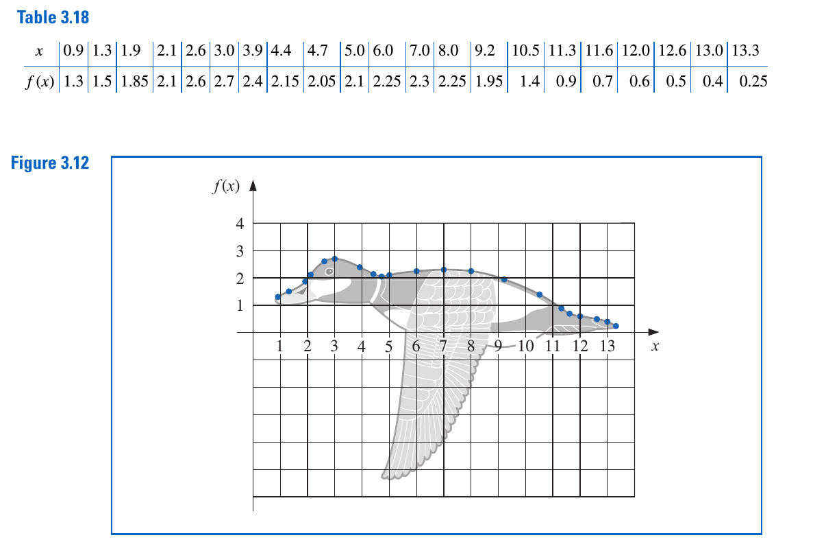
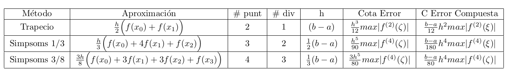

taller preparacion examen final
- Observe las siguiente tabla de puntos

- Use su programa para encontrar el polinomio interpolador
- Use splines cubicos e interpole los puntos
- Sea los siguientes puntos
| \(x_i\) | \(y_i\) |
|---|---|
| 0.1 | 0.09983342 |
| 0.2 | 0.19866933 |
| 0.3 | 0.29552021 |
| 0.4 | 0.38941834 |
| 0.5 | 0.47942554 |
| 0.6 | 0.56464247 |
| 0.7 | 0.64421769 |
| 0.8 | 0.71735609 |
- Encuentre el polinomio que interpola estos puntos usando un sistema de ecuaciones generado
- Use su programa para encontrar el polinomio interpolador
- Use splines cúbicos e interpole los puntos
- Grafique los polinomios obtenidos en cada uno de los puntos anteriores y compare con la función \(f(x)=\sin(x)\)
Encuentre la aproximación de \[ u'(x) = c_{-2} u(x-2h) + c_{-1} u(x-h) + c_0u(x) + c_1u(x+h) + c_2u(x+2h) + O(h^4). \]
Encuentre la aproximacion de \[u''(x) = c_{-2} u(x-2h) + c_{-1} u(x-h) + c_0u(x) + c_1u(x+h) + c_2u(x+2h) + O(h^4).\]
Teste la formula para cinco puntos para aproximar \(u''(1)\) usando \(u(x) = \sin(2x)\) con valores de \(h\) desde el siguiente vector {}. Haga una tabla del error versus
el valor de \(h\). ¿De que orden es el error?Sea la siguiente familia de puntos
| \(x_i\) | \(y_i\) |
|---|---|
| 1.3 | 4 |
| 1.0 | 13 |
| 1.5 | 8 |
| 1.1 | 26 |
| 1.7 | -1 |
Encuentre \(y'\) de primer y segundo orden en el punto $\(1.7\).
- En un circuito con un voltaje impreso \(e(t)\) y una inductancia
- La primera ley de Kirchhoff nos da la siguiente relación \[e(t)=L\frac{di}{dt}+Ri\] donde \(R\) es la resistencia del circuito e \(i\) es la corriente. Suponga que mediante la corriente con varios valores de \(t\) y obtenemos \begin{center}
| \(t\) | \(i\) |
|---|---|
| 1.0 | 3.10 |
| 1.01 | 3.12 |
| 1.02 | 3.14 |
| 1.03 | 3.18 |
| 1.04 | 3.24 |
donde \(t\) se mide en segundos. \(i\) se da en amperes, la inductancia L es una constante de 0.98 henries y la resistencia es de 0.142 ohms. Aproxime \(\frac{di}{dt}\).
- Aproxime la integral \(\int_0^2x^2ln(x^2+1)\,dx\) usando \(h=1/3\) Use
- La regla del trapecio
- La regla de Simpsoms 1/3
- La regla de Simpsoms 3/8
- Determine el valor de \(n\) (número de puntos) y de \(h\) que se requiere para aproximar \(\int_0^2 e^{2x}\sin(3x)\,dx\), esperando que el error total sea menor que \(10^{-4}\), usando
- La regla del trapecio
- La regla de Simpsoms 1/3
- La regla de Simpsoms 3/8

- Realice una tabla de comparación de los métodos Euler implicito, Euler explicito y Runge-Kutta de orden 4
- Solucione el siguiente problema de valor inicial \[ \frac{dy}{dt}=y-t^2+1, \quad 0\leq t \leq 2, \quad y(0)=0.5\] con \(h=0.2,0.1,0.05\) usando
- Euler implícito
- Euler explicito
- Runge-Kutta de orden 4
Encuentre el error en cada uno de los métodos para cada \(h\) y comparelos